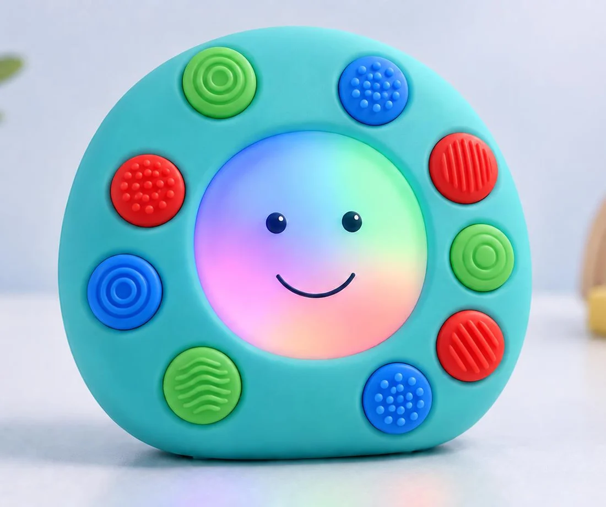
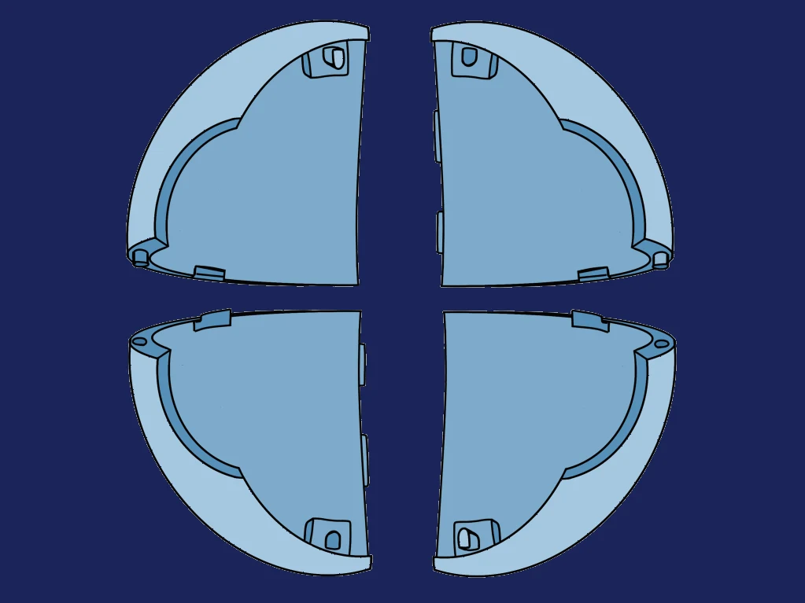
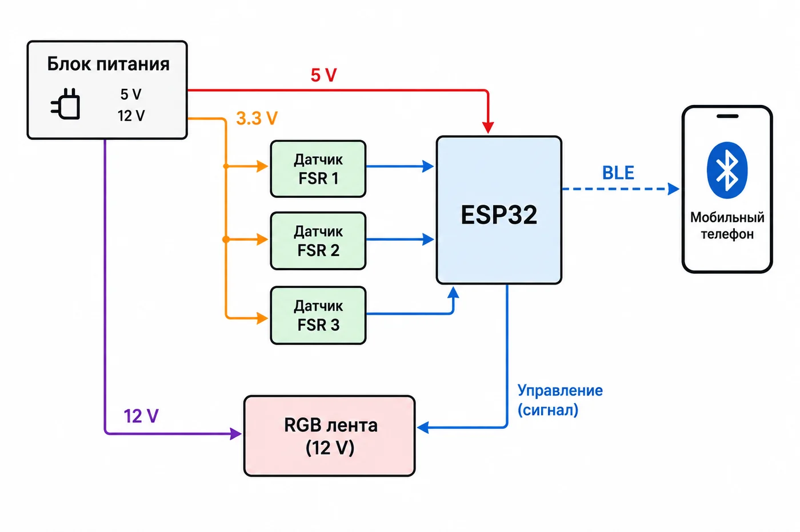
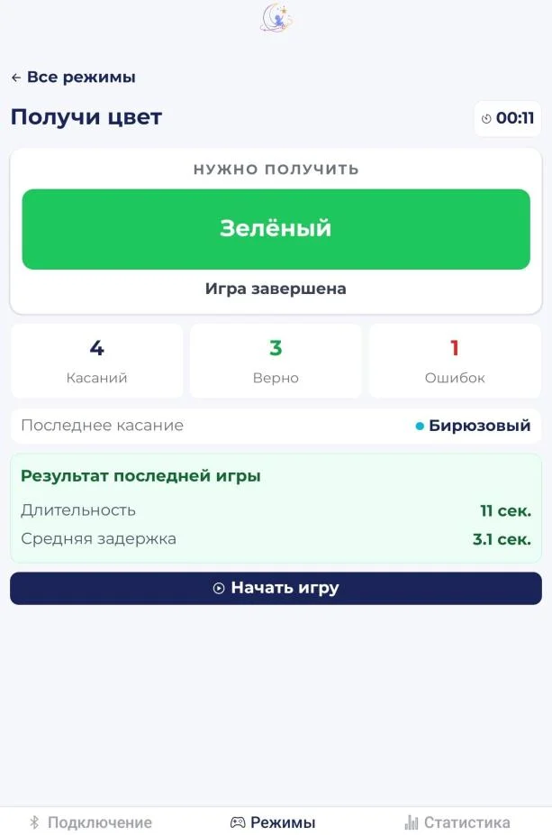

Найди цвет
- Действие
- нажать кнопку заданного цвета
- Фиксируем
- правильность, время, попытки
Свет. Цвет. Прикосновение.
Lunaris — развивающая игрушка, которая превращает прикосновения в свет, а игру — в маленькие открытия.

Идея проекта
Lunaris объединяет развивающую игрушку и мобильное приложение с аналитикой. Мы создаём доступный современный инструмент для поддержки детей с особенностями сенсорного восприятия: он помогает организовывать игровые занятия и отслеживать активность ребёнка.
Родителям и специалистам важно видеть, как ребёнок взаимодействует с игрушкой. Поэтому игровой опыт и данные об активности мы объединяем в одной системе.
01 / Знакомьтесь, Lunaris
Девять тактильных кнопок, мягкая форма и световые задания. Ребёнок исследует и играет, а взрослый может следить за результатами в приложении.
Это концепт и проектируемые характеристики. Лечебный или коррекционный эффект мы не заявляем.
Всё начинается с прикосновения
Понятная последовательность для ребёнка. Полезная обратная связь для взрослого.
Игрушка подсвечивает задание.
Ребёнок нажимает кнопку, а датчик фиксирует усилие.
Контроллер ESP32 проверяет ответ по правилам игры.
Свет доброжелательно показывает результат.
По Bluetooth LE результат уходит в приложение.
Игрушка → приложение: кнопка, время, результат, сложность.
Приложение → игрушка: режим, уровень, яркость и громкость.
02 / Игровые режимы
Находить цвета, запоминать сигналы или просто исследовать — у каждой игры свой ритм.
Сложность, яркость, громкость и темп настраиваются, перерыв доступен в любой момент. Режим «Две руки» пока только предложение.
Это не диагноз и не лечение. Результаты заданий оценивает специалист, занятия проходят с согласия родителей. Опора: работы Д. Б. Эльконина и Л. А. Венгера.
03 / Внутри Lunaris
Тактильные материалы, датчики давления и связь с приложением в одном компактном корпусе.

Корпус
Требования к проектированию: ТР ТС 008/2011, СанПиН, звук до 65 дБА, отсутствие острых кромок и мелких съёмных деталей. Проверки запланированы на этапе прототипа.
Электроника
Прошивка на C/C++ в Arduino IDE. Показана функциональная схема; принципиальную готовим к сборке прототипа.



04 / Мобильное приложение
Вся история игры — под рукой. Приложение помогает видеть активность, возвращаться к прошлым занятиям и выбирать следующий режим.
Показаны макеты интерфейса. Приложение на React Native; данные ребёнка минимизируются, диагнозы не ставятся.
05 / Путь к первой игрушке
Lunaris развивается шаг за шагом. Вот где мы сейчас и над чем работаем дальше.
06 / Люди за Lunaris
Объединяем инженерию, психологию и дизайн, чтобы создать полезный игровой опыт.
Руководитель проекта, экономика и маркетинг
Психологическое направление, план оценки
Дизайн и конструкция корпуса, материалы
Электроника, прошивка и приложение
Рынок
Модель по цене 7 000 ₽. SAM 10% является гипотезой, а не результатом опроса. Данные о детях: Росстат, 2025.
4 658,75 ₽
предварительная смета электроники одной игрушки
3 285 ₽ из 4 658,75 ₽ приходится на датчики давления.
Цена продажи 7 000 ₽. Оценка полной себестоимости прототипа около 6 618,75 ₽, запас 381,25 ₽ до налогов и логистики. Поэтому первая задача — удешевить датчики и серийный корпус.
| Компонент | Кол-во | Цена | Сумма |
|---|---|---|---|
| ESP32 | 1 | 560,00 ₽ | 560,00 ₽ |
| Макетная плата | 1 | 40,00 ₽ | 40,00 ₽ |
| Стабилизатор +5 В | 1 | 70,00 ₽ | 70,00 ₽ |
| Конденсатор электролитический | 3 | 1,25 ₽ | 3,75 ₽ |
| Блок питания | 1 | 373,00 ₽ | 373,00 ₽ |
| Стабилизатор +3,3 В | 1 | 30,00 ₽ | 30,00 ₽ |
| ULN | 1 | 35,00 ₽ | 35,00 ₽ |
| Датчик давления FSR402 | 9 | 365,00 ₽ | 3 285,00 ₽ |
| Резистор | 9 | 6,00 ₽ | 54,00 ₽ |
| RGB-лента, 1 м | 1 | 208,00 ₽ | 208,00 ₽ |
| Итого | 4 658,75 ₽ |
В смету не входят корпус, сборка, упаковка, элементы безопасности и монтажа.
Выручка в млн ₽ при цене 7 000 ₽. Это сценарий, а не прогноз: на пятом году нужно продавать около 1 191 игрушки в месяц, для этого нужны подтверждённый спрос и мощности производства.
Конкурентный анализ
| Бренд | Основные направления | Моторика | Электроника | Интерактивность | Ориентация на детей с нарушением мелкой моторики |
|---|---|---|---|---|---|
| BertToys | Интерактивные и развивающие игрушки | + | + | + | - |
| Bondibon | Развивающие и сенсорные игрушки | + | -+ | -+ | - |
| Smile Decor | Развивающие, логопедические и сенсорные игрушки | + | - | -+ | - |
| Умка | Развивающее оборудование | + | -+ | + | - |
| LUMICUBE | Детские гаджеты и развивающие устройства | -+ | + | + | - |
| RadugaKids | Развивающие игры и игрушки | + | + | + | - |
Предварительное сравнение из материалов проекта: «+» — функция представлена, «−» — не отмечена, «−+» — зависит от модели. Характеристики конкретных изделий требуют уточнения.
Контакты
Хотите протестировать игрушку, стать партнёром или задать вопрос? Напишите руководителю проекта.
Дулепова Анна Игоревна
 Материалы проекта
Материалы проекта